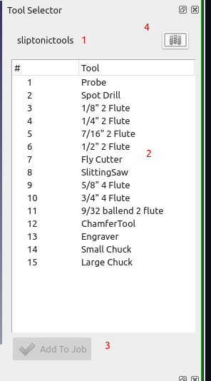

CAM ToolBitDock
| This page is incomplete; it was marked as unfinished on the wiki. |
- Menu location
-
- Workbenches
- Default shortcut
-
kbd:[P T]
- Introduced in version
-
0.19
- See also
Description
The  CAM ToolBitDock command opens the Toolbit Selector.
CAM ToolBitDock command opens the Toolbit Selector.
The purpose of the selector is to display the currently selected library and allow the user to quickly add tool controllers to the CAM Job(s).
Double-clicking on a toolbit will create a single tool controller for the toolbit. Multi-selecting toolbits and pressing the 'Add to Job' button will create tool controllers for all toolbits in the library.
The user may also select multiple tools and use the 'add…' button at the bottom to add tool controllers for the selection.
 |
The top of the panel shows the name of the current library (1). All tool libraries from that location are scanned and shown in the selector. The selector will remember the last selection between uses. A manager button at the top right (4) allows the user to launch the library manager. The library manager can be used to maintain the toolbits and to select a different library. |
Usage
Create Tool Controllers
-
There are several ways to open the Toolbit Selector:
-
Press the
 Add Toolbit… button.
Add Toolbit… button. -
Select the option from the menu.
-
Use the keyboard shortcut: P then T.
-
-
Use the selector to add tool controllers to a CAM Job.
-
Doubleclick on a toolbit node (2) to create a toolcontroller for that toolbit.
-
select one or more toolbits and press the 'add to Job…' (3) button.
-